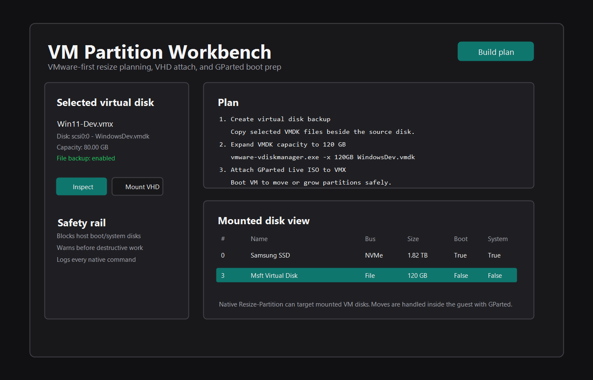

Load a VMware configuration file and list attached VMDK, VHD, and VHDX disks with capacity and path checks.
Built around the real VM resize job
Start from the VMX, choose the backing disk, review a command plan, and keep the host boot disk out of the blast radius.
Uses VMware's vmware-vdiskmanager.exe when available, so the disk container grows through VMware tooling.
Mount, inspect, resize, and dismount Microsoft virtual disks with native Windows disk tooling.
Uses Resize-Partition for mounted guest disks and refuses to target the Windows boot or system disk.
Attaches a GParted Live ISO to the VMX and adds boot delay, giving you a proven editor for partition moves.
Every action is shown before execution, and the log records each native command for auditability.
The move-safe VMware path
Host tooling grows the virtual disk. GParted Live moves partitions inside the guest disk where the file systems can be handled correctly.
- Power off the VM and take a VMware snapshot.
- Load the VMX, choose the virtual disk, and enable backup.
- Expand the disk container or mount a VHD/VHDX for supported Windows resize.
- Attach GParted Live to move partitions or perform complex layout edits.
Partition moves are intentionally delegated to GParted Live. The app prepares the VM and keeps the workflow repeatable instead of raw-editing file systems from the host.

Download and run
The release is portable. Use the exe for normal GUI work, or the PowerShell script when you want to inspect or automate the commands.
| Artifact | Use it for | Link |
|---|---|---|
VMPartitionWorkbench-v*-win-x64.exe |
Normal desktop use. Requires administrator rights for disk changes. | Download latest exe |
VMPartitionWorkbench-v*-portable.zip |
Full bundle with exe, script, optional install scripts, license, and checksums. | Download latest zip |
v0.1.0 |
First published Windows release with the versioned exe, portable zip, and checksums. | Open release |
src/VMPartitionWorkbench.ps1 |
Auditable source and CLI mode. | View script |
Quick start
Open as administrator, load a VMX, inspect the disk, then build a plan before touching anything.
powershell.exe -NoProfile -ExecutionPolicy Bypass -STA -File .\src\VMPartitionWorkbench.ps1